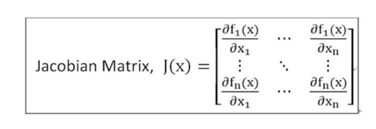
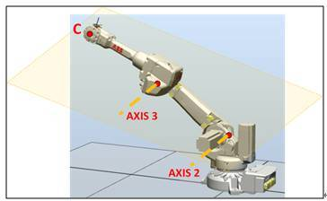

1 什麼是奇異點？
六軸機器手臂在現代自動化工業中扮演著不可或缺的角色，其高度的靈活性使其能夠在三維空間中達到任意位置和姿態。然而，在特定的組態下，機器手臂會遭遇「奇異點」（Singularity），導致其運動受限、甚至完全卡死。
核心定義：奇異點是指機器手臂在工作空間中的特定位置或姿態，在這些點上，機器手臂會失去一個或多個自由度。末端執行器雖然在理論上可朝某方向移動，但關節無法對應運動，甚至會因控制器試圖以極高速度驅動而產生劇烈震動或觸發安全停機。
2 奇異點的成因：物理上的直觀理解
從物理結構上來說，奇異點的發生通常與機器手臂的兩個或多個關節軸線的排列方式有關。當不同的關節軸線變得共線（在同一直線上）或共面（在同一個平面上）時，它們的運動會產生相互依賴或抵銷的效果。
這會導致末端執行器在某個方向上的運動能力喪失。在這種情況下，一個方向的微小運動可能需要兩個或多個關節以無限大的速度來補償，這在物理上是不可能實現的。

3 數學原理：雅可比矩陣的角色
要深入理解奇異點，就必須引入雅可比矩陣（Jacobian Matrix）。它是連接關節速度與末端執行器速度的關鍵數學工具：
- $V$：末端執行器的速度向量（包含線速度和角速度）。
- $J(q)$：雅可比矩陣，為當前關節角度 $q$ 的函數。
- $\dot{q}$：各個關節的速度向量。
在控制中，我們通常已知期望速度 $V$，需要利用逆運算求解關節速度：
行列式為零的意涵：當機器手臂處於奇異點時，雅可比矩陣的行列式為零（$|J(q)| = 0$），意味著矩陣是奇異的且不存在逆矩陣。這相當於數學上的「除以零」，使得計算出的關節速度趨近於無限大，導致機器卡死或報錯。
4 空間對話：關節空間 vs. 笛卡爾空間
奇異點的發生，本質上是特定的「原因」（一組特定的關節角度組合）導致了無法產生預期的「結果」（在笛卡爾空間中沿特定方向移動或旋轉）。
關節空間 (Joint Space)
機器的「內部視角」。直接指令各關節移動至指定角度。路徑為弧形，不會發生奇異點問題，因為不要求末端遵循特定空間直線。
笛卡爾空間 (Cartesian Space)
「外部世界」視角。指令末端工具移動至 $(X, Y, Z)$ 座標與指定姿態。需要透過逆向運動學即時計算關節速度，奇異點便在此計算過程中爆發。
5 六軸機器手臂三大奇異點：成因圖解與專屬互動實驗室
每個奇異點均配備原廠投影片原圖與專屬即時互動實驗室，可手動拖拉關節、調整角度，親自體驗控制器速度發散與自由度退化現象！
腕部奇異點 (Wrist Singularity)
軸角度「因」： 第五軸角度趨近於零（$J_5 = 0^\circ$），第四軸旋轉軸心線與第六軸旋轉軸心線完全重合共線。
笛卡爾「果」： 末端工具失去繞第五軸原始垂線方向獨立旋轉的角速度自由度。此時要求末端進行極微小的橫向偏擺，控制器為滿足插補要求，必須命令 $J_4$ 與 $J_6$ 以無限大速度反向暴轉 $180^\circ$，導致馬達超速停機（Error 10007 / 5015）！

互動實驗：腕部軸心重合與暴轉模擬
J5 正常 (30°)肩部奇異點 (Shoulder / Alignment Singularity)
軸角度「因」： 腕部中心點（Wrist Center $W_c$）正好移動至第一軸旋轉軸心柱面上（$X=0, Y=0$ 正上方或正下方死區）。
笛卡爾「果」： 第一軸與第四軸產生運動衝突。當末端路徑試圖穿越中心柱時，第一軸必須在瞬時旋轉 $180^\circ$ 以調轉大臂方向，造成所需關節速度 $\dot{\theta}_1 \to \infty$。控制器將發出急劇震顫並觸發過速度急停。

互動實驗：中心軸穿越與第一軸瞬間甩動模擬
遠離中心 (安全)肘部奇異點 (Elbow / Boundary Singularity)
軸角度「因」： 手臂完全伸展至極限，第二、三軸中心與腕部中心三點共線成一條直線（夾角趨近 $180^\circ$）。
笛卡爾「果」： 手臂已到達工作空間幾何邊界，失去沿連桿延伸方向進一步前進的線速度自由度。此時若發送向前移動指令，控制器雅可比行列式變為零，手臂無法再前進哪怕 0.1mm，並觸發工作邊界報警。

互動實驗：手臂伸展極限與徑向鎖死模擬
伸展率 82% (正常)6 現場工程師如何避開奇異點？實務手法與 7 軸手臂創新
1 工裝與佈局設計避障
在機台機構佈局時，將手臂傾斜安裝（如傾斜 45°）或調整治具高度，使加工軌跡避開正上方肩部中心柱面，讓第五軸恆處於 5°~15° 偏擺角。

2 7 軸冗餘度機器手臂（Redundant Robot）
在三維空間 6 自由度任務中加入第 7 旋轉軸（冗餘自由度 Null Space）。末端執行器位置姿態不變的前提下，手臂內部關節可以「如人手肘抬起落下」自如靈活轉動，徹底擺脫奇點束縛！

總結對照表
| 奇異點類型 | 軸角度的「因」 | 笛卡爾空間的「果」 (失去的自由度) | 原廠規避對策 |
|---|---|---|---|
| 腕部奇異點 | 第五軸角度為零，第四、六軸軸線重合。 | 失去繞第五軸軸線方向的角速度能力。 | 治具或點位強制維持 J5 ≥ 3°~5° 偏置角。 |
| 肘部奇異點 | 手臂完全伸直，第二、三軸及腕部中心共線。 | 失去沿手臂伸展方向的線速度能力。 | 工作行程限制在最大半徑的 90% 以內。 |
| 肩部奇異點 | 腕部中心與第一軸軸線重合。 | 失去在特定平面內橫向移動的線速度能力。 | 工站左右位移，避開手臂正上方/正下方死區。 |